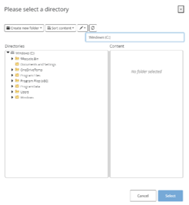
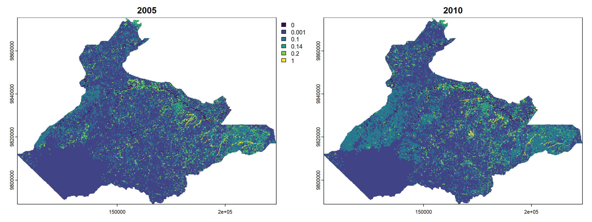

6 Hydrology
6.1 Description
This module estimates soil erosion by water using the Revised Universal Soil Loss Equation (RUSLE). The result of this analysis allows stakeholders to understand the extent of erosion at one or two specified times across a given area, contributing to the formulation of spatially explicit strategies on enhancing soil conservation.
RUSLE is an empirical model widely used in soil conservation and watershed management. It provides a method for estimating annual soil loss due to water erosion. A key feature of RUSLE is predicting long-term average annual soil loss.
6.2 Usage
6.2.1 Workflow
The workflow for this module can be divided into four key steps.
Data preparation. In this step, users prepare the necessary data, noting the correct input specifications.
Upload data. Once all the data has been prepared, users input the data by clicking Browse or manually dragging the input data to the correct attribute.
Set parameters. The user sets the parameters of the multiple time series analysis they wish to conduct, which includes map resolution, single or two step analysis options, and output directory. For single step analysis, the user must input the landcover map and assign the year of analysis. For two step analysis, the user must input T1 and T2 landcover map and assign the years for both data. Finally, the user selects the output directory they wish to have the results stored.
Analyze results. Upon completion, the user will find the analysis results in the module or directly in the output folder. The module generates a webpage report containing a brief description of the module, summary of input data, and maps on soil loss analysis components.

6.2.2 Step-by-step instructions
Step 1: Uploading Data
Input your data into the left-hand side of the module by selecting the ‘Browse’ button for each data or drag your file from your computer into the data input box. Ensure that you upload the correct data input for each parameter. A blue bar with ‘Upload complete’ will appear once you have successfully input your data for each parameter.
Total Annual Precipitation Map: Click “Browse” and select your GeoTIFF file containing the total annual precipitation data (mm/year).
Digital Elevation Model (DEM): Click “Browse” and select your GeoTIFF file containing the digital elevation model data (meters above sea level).
Soil Properties: Click “Browse” for each of the following soil property GeoTIFF files: Clay content (%); Silt content (%); Sand content (%); and Organic Soil content (%)
Land Cover Map: Click “Browse” and select your GeoTIFF file containing the land cover classification data.
Planning Units: Click “Browse” and select your planning unit shapefile. Select your planning unit file in .dbf, .prj, .shp, and .shx extensions. You may drag more than 1 file at once.
Look-up Table for Land Use/Cover, C-factor, and P-factor: Click “Browse” and select your CSV file containing the lookup table with columns for:
Land cover class
C-factor value
P-factor value
Step 2: Setting Analysis Parameters
Set your desired map resolution. The default map resolution is 100, meaning 1-pixel accounts for 100m x 100m. Note that the lower the resolution input means the more detailed each pixel can store information, hence will require longer processing time.
Choose whether you would like to create a single or two step time series analysis by selecting the corresponding circle.
Input your land cover/land use map and label the corresponding year (T1). If you selected two step time series analysis, do the same for your T2.
Select your output directory where you wish to save your report. Finish by clicking ‘Select’.

Step 3: Running the Analysis
Click on ‘Run QuES-H Analysis’ to initiate the analysis. A progress bar will appear on the bottom right corner, indicating the analysis status. Once completed, you may access your results by clicking ‘Open Report’ or ‘Open Output Folder’.
6.2.3 Tips
While detailed long-term data is preferred when available, this module focuses on methods using publicly available spatial data.
Users should ensure that all raster inputs are properly aligned (i.e., with identical projection systems, extents, and resolutions) and have consistent no-data values.
The look-up table allows flexibility in assigning C and P factors based on local conditions or literature values.
6.3 Data Requirements
6.3.1 Input Data & Parameters
| No | Data Name | Type | Format | Projection Requirements | Description |
| 1. | Land Cover Map (Time 1) | Categorical raster | GeoTIFF | UTM | A map classifying land use types for the start year. |
| 2. | Land Cover Map (Time 2) | Categorical raster | GeoTIFF | UTM | A map classifying land use types for the end year |
| 3. | Total annual precipitation | Categorical raster | GeoTIFF | A map of total rainfall over a year (mm/year) | |
| 4. | Digital Elevation Model (DEM) | Categorical raster | GeoTIFF | A map of the terrain elevation (meters above sea level) | |
| 5. | Soil properties maps | Categorical raster | GeoTIFF | Maps of clay, silt, sand, and soil organic content. | |
| 6. | Land cover look up table | Table | CSV | A table containing raster values with corresponding land cover class. | |
| 7. | Planning unit | Vector | Shapefile | A polygon shapefile of administrative or management zones. |
6.3.2 Example Datasets
Practice data sets used in this module can be accessed at agroforestri.id/lumens-ques-h
6.3.3 Data Acquisition
Land cover maps can often be obtained from global or official national data. For creating your own land cover maps from satellite imagery, consider using software such as Google Earth Engine, ArcGIS and R.
6.4 Outputs
6.4.1 Output Files
| File Name | Type | Description |
| c_factor | TIF File | A map of crop management values |
| soil_erosion | TIF File | A map of soil erosion susceptibility. |
| soil_erosion_reclass | TIF File | A map of soil erosion susceptibility reclassed. |
| soil_erosion_per_planningunit[SUFFIX] | Xlsx | Table of extent of soil erosion per planning unit |
| soil_erosion[SUFFIX] | Xlsx | Table of extent of soil erosion per category. |
| p_factor | TIF File | A map of support practices on soil erosion. |
| ls_factor | TIF File | A map of combined slope length and steepness. |
| k_factor | TIF File | A map of soil erosion susceptibility |
| QUES-H_report | Html | A report summarizing the analysis results with visualizations and tables |
6.4.2 Report Interpretation
The QuES-H module report consists of 4 main sections: Summary, Brief Description, Input Data, and Results.
Section 1: Summary
In this section, you will find basic details of the data you have input, including total area of interest, periods of analysis, estimated soil erosion rates specific to each class, and overall patterns within the study period. For policymakers, the summary highlights a general understanding of soil erosion dynamics, which may be used as initial context for strategic planning on soil conservation efforts.
Section 2: Module Description
This section states the focus of the module, namely on soil erosion risk assessment using the Revised Universal Soil Loss Equation (RUSLE) and mentions plans for future hydrological analysis features.
Section 3: Input Data
This section will present all input data to users in map format.
Total annual precipitation map displays the distribution of rainfall across the region over the span of one year. Each pixel in the map represents the total rainfall in millimeters (mm) per year. Areas with the highest total annual precipitation are displayed in yellow-green shades, while blue-purple shades indicate regions with lower annual precipitation. Identifying areas with higher or lower levels of precipitation allows users to understand conditions of water availability, agricultural potential and flood risks.
The Digital Elevation Model (DEM) map illustrates the terrain elevation meters above sea level. Areas with higher elevations are displayed in yellow-green, while areas with lower elevations are displayed in blue-purple. This map is helpful for understanding the topography of the area, providing insight towards drainage patterns and erosion potential.
Soil properties maps showcase soil characteristics, defined by clay, silt, sand, and organic soil content, at a depth of 0 to 5cm in the study area. Each map has a color scale bar indicating the range of values, with the highest values in the yellow-green spectrum and the lowest in the blue-purple spectrum. Use this to identify variations across the region. By analyzing all four maps together, you can better understand the relationships between soil components (e.g., areas with high clay content may have different organic carbon levels compared to sandy regions).
Sand content map shows the content of sand in soil at a depth of 0 to 5cm. Areas with high sand content tend to have more porous soils with better drainage but lower nutrient retention, while areas with lower sand content may have more compact soils.
Silt content map shows the content of silt in soil at the same depth. Areas with higher silt content are likely to retain moisture better than those with less silt, influencing water retention capacity and soil fertility. However, the same areas may also be prone to erosion.
Clay content map illustrates the percentage of clay in soil. Areas with rich clay content may hold more water and nutrients than areas with less clay but may have poor drainage potentially leading to waterlogging in certain areas.
Soil organic carbon (SOC) content map illustrates soil organic carbon in grams per kilogram. High SOC areas are generally more fertile and better for plant growth, while lower SOC regions might indicate depleted or less fertile soils.
Land cover map displays spatial information on land cover classes of the study area within the set time frame. Using a categorical raster format, each pixel displays different land cover classes. The map is aided with a legend on the right-hand side that lists the land cover classes and their corresponding colours.

Identify the dominant land cover classes and their spatial distribution. The dominant color on the map shows the dominant land cover classes in the study area. In the picture above, for instance, dark blue areas are found in the bottom left-hand corner of the map while blue-green areas are found in most of the study area. This may indicate that forest areas, shown in dark blue, are found in concentration, while the majority of the study area shown in blue-green are of agriculture-based land uses, such as rubber, oil palm, and agroforestry.
Compare changes in land use over time. You may identify shifts in the spatial distribution of land use classes over T1 dan T2. For example, the increase of green pixels in 2010 from previously dark blue pixels in 2005 may indicate agricultural expansion on once forest-based land uses.
Planning unit map displays the management zones of the study area. The map shown corresponds to the legend on the right-hand side of the map, indicating the color of each zone.
Section 4: Results
The report presents two analysis results, namely RUSLE factor maps and estimated soil erosion.
RUSLE Factor Maps
This section visualizes each RUSLE factor through a spatial distribution map. Users will find distribution maps for R factor (rainfall erosivity), K factor (soil erodibility), LS factor (length and steepness), C factor (cover management), and P factor (practice management). For all maps, areas with higher factor values displayed to towards the shade of yellow, while areas with lower factor values are displayed to towards the shade of dark blue.
R factor map shows the spatial distribution of the effect of rainfall on soil erosion. The erosivity of rainfall is interpreted as the average amount of rainfall erosivity energy per area, calculated based on hourly rainfall intensities and averaged over a year. Rainfall erosivity is mostly affected by short-term, high-intensity precipitation events. This factor was generated using the method of Moore (1979). Higher R factor areas suggest more intense rainfall events that are more likely to cause erosion. Lower R factor areas have less erosive rainfall.
K factor map illustrates the spatial distribution of soil erodibility based on its soil properties measured in tons of soil loss per hectare per unit of rainfall erosivity. This factor was generated using the method of Williams (1995) by combining physical soil parameters such as sand, silt, and clay fractions, along with the organic carbon (or organic matter) fraction in the topsoil layer. Areas with higher K factor values are more prone to erosion than areas with lower K factor values.
LS factor map (unitless) displays the combined effects of length and slope on erosion potential. This factor was generated from digital elevation model data using the method of Moore & Burch (1986). Areas with higher LS factor values suggest steeper or longer slopes, contributing to higher potential of soil erosion.
C factor maps (unitless) illustrate the effects of vegetation cover on the overall impact of soil erosion. This factor was generated using land use classifications from land cover products and agronomic statistics, with C factor values are either available from government data, global data products, or derived from research references. The C factor relates the soil loss from land with specific vegetation cover to the soil loss that would occur from clean-tilled, continuously fallow land. Areas with more vegetation are more protected from higher impacts of raindrop on the soil.
In two step time series analysis, the module will generate the C factor map for T1 dan T2.

P factor map (unitless) illustrates the spatial distribution of support practice impact on soil erosion. The control practices can reduce the potential of erosion by reducing the amount and velocity of run-off, modifying the flow pattern and direction of surface run-off. The value ranges of P factor are between 0 and 1. In this model, as the P factor is assumed to be equal to 1, the module generates a single-color map.
Estimation of Soil Erosion
Users will find estimation of soil erosion at landscape level and at the planning unit level.
Soil Erosion at Landscape Level
Soil erosion results are categorized into six categories, namely Slight erosion (<5 ton/ha/year), Mild (5-25 ton/ha/year), Moderate (25-50 ton/ha/year), Strong (50-80 ton/ha/year), Very Strong (80-150 ton/ha/year) and Severe (>150 ton/ha/year). The darker the color on the map indicates a lighter estimation of soil erosion. Conversely, a lighter color suggests stronger soil erosion. For two step analysis, the module will generate maps for T1 and T2.
For a more detailed account of soil erosion per category, the soil erosion map distribution correlates with the subsequent table. Users will find and be able sort soil erosion rates by area and percentage.
As policymakers, the information on soil erosion at the landscape level suggests important insights on the severity of soil erosion, where it occurs, and trend. In particular, the information may be useful in identifying high risk areas, understand landscape variability, assert baseline data and foster collaboration in implementing soil conservation strategies.
Soil Erosion at Planning Unit Level
The following three tables present the crosstabulation of soil erosion categories for each planning unit in the study year(s). For instance, users will be able to identify and compare the total area of all soil erosion categories planning unit Hutan Lindung (ha), noting that planning unit Perkebunan and Pertanian Lahan Basah has a larger area with severe soil erosion risk, at 1.442 and 1.522 ha respectively in 2010. For two step analysis, users are supplemented with a trajectory table of soil erosion changes from T1 to T2.
Insights from these tables could provide valuable information for policymakers, for instance:
Identify priority areas for intervention. With spatially explicit insights, policymakers will be able to identify high-risk areas for soil erosion mitigation and landscape restoration. Using the planning unit, land management policies may be able to focus on land uses that are more vulnerable to soil erosion.
Identify spatial distribution of soil erosion risk factors. The module generates maps for each RUSLE factor, suggesting spatially explicit information on areas with lower or higher risk. This allows for more specific strategies on increasing soil erosion resiliency.
Identify trends over multiple periods of time. Trajectory of soil erosion between T1 and T2 provides insight into the areas with no changes, decreasing and increasing risk of soil erosion.
6.5 Theoretical Background
6.5.1 Model Description
This module calculates soil erosion based on the Revised Universal Soil Loss Equation (RUSLE) equation: A = R * K * LS * C * P.
6.5.2 Key Assumptions
P factor in this module uses RUSLE factors preparation methods found here: https://penerbit.brin.go.id/press/catalog/download/538/511/11585?inline=1 In this model, P factor is assumed 1.
C factor is assumed to directly influenced by the vegetation type, stage of vegetation growth and percentage of vegetation cover. In currect script, we use this from Erencin et al. 2000; Panagos et al. 2015 (PDF) Spatial Estimation of Soil Erosion Using RUSLE Modeling: A case study of Dolakha District, Nepal (researchgate.net)
6.5.3 Limitations
- Accuracy is limited by the quality and resolution of the input maps.